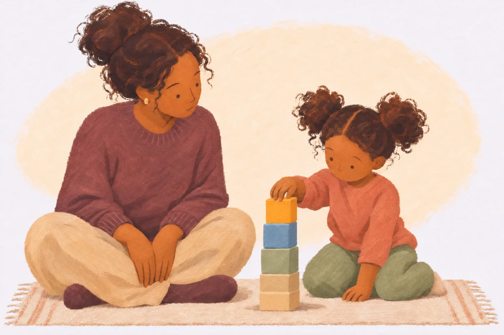

Brincar e participarPara treinar brincandoSó para consulta
Cinco minutos seguindo a brincadeira
Compartilhar uma brincadeira escolhida pela criança.
- 5 minutos
- Brinquedo conhecido
- Fora do perfil de Caio
Este card não combina com o perfil de Caio
É para até 4 anos e 11 meses; Caio tem 7 anos. Você pode ler, mas ele não entra no kit nem recebe retorno.
Antes de começar
- Só o que os passos pedem, seguro e já em casa.
- Confira na hora: a criança está bem, quer participar e os objetos são seguros para ela.
- Cerca de 5 min. Não precisa terminar.
Limites desta sugestão
A seleção é preliminar: as categorias de recursos não confirmam os materiais detalhados, conforto nem habilidades específicas. O adulto deve verificar esses requisitos antes de aplicar.
Use somente os materiais descritos nos passos, seguros e já disponíveis. Se não os tiver, não aplique este card.
Adulto verifica antes: criança confortável, participação voluntária e objetos seguros para suas habilidades.
Tempo aproximado para experimentar a proposta; não é dose terapêutica nem obrigação de completar.
Como começar
- Separe brinquedos seguros já conhecidos e convide a criança a escolher o que quer explorar.
- Acompanhe a iniciativa dela por alguns minutos, sem transformar a brincadeira em perguntas ou comandos.
- Observe o interesse e encerre com calma quando ela quiser parar; registre qual atividade foi escolhida.
Se a criança tem acompanhamento, a orientação do profissional vem antes desta sugestão.